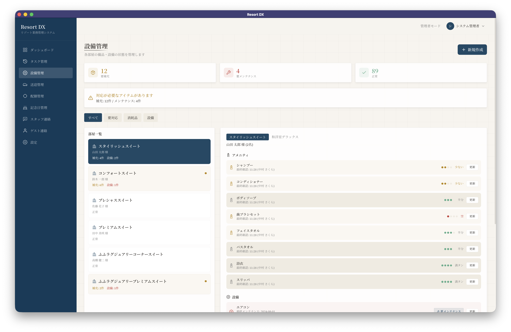
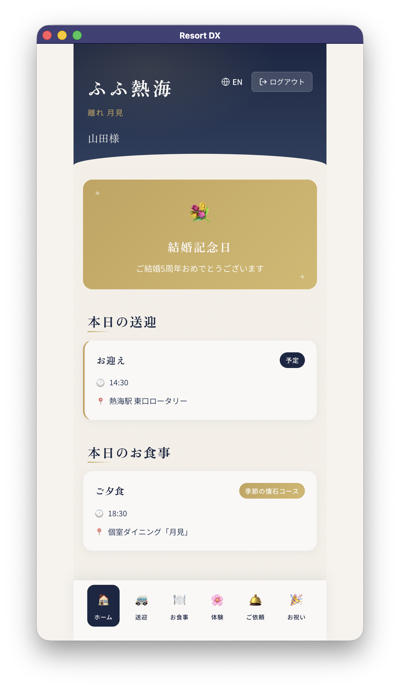
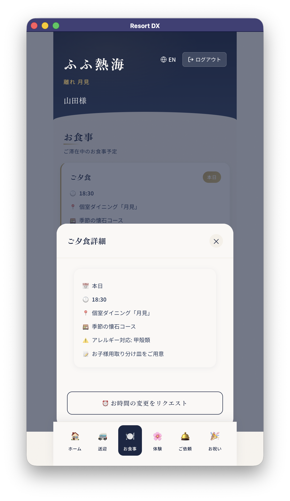
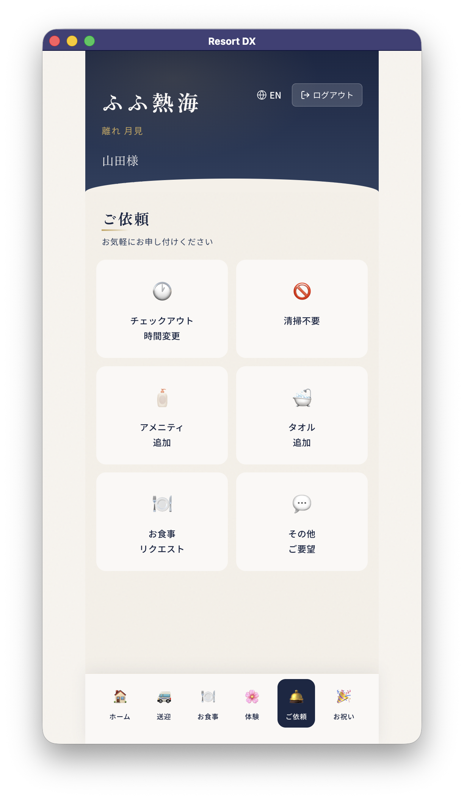
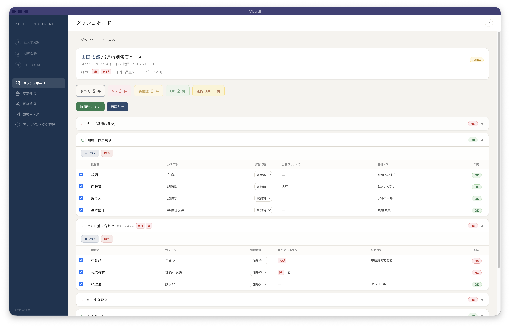

COMPANY INTRODUCTION
作って終わりにしない。
一緒に作り、一緒に育てる。
多くのお客様が抱える、開発パートナー選びの悩み
外注したが品質が低く、作り直しでコストが倍に
テスト不足・設計不備による手戻りが経営を圧迫
要件を伝えたのに、期待と違うものが納品された
コミュニケーション不足で認識齟齬が発生
技術的な判断を丸投げするしかなく、妥当性が判断できない
提案の良し悪しを評価できるパートナーが不在
開発の進捗が見えず、完成まで不安が続いた
ブラックボックス化した開発で状況が把握できない
お客様に安心と喜びを届けるために
テスト駆動開発（TDD）と自動テストにより、「動くけど壊れやすい」を作りません。CI/CDで品質を継続的に担保します。
スプリントごとに動くソフトウェアをお見せします。進捗を可視化し、完成まで不安にさせません。
言われた通りに作るだけではありません。技術の専門家として、ビジネス価値を最大化する最適な提案をします。
CASE STUDIES

課題
旅館の業務（清掃・配膳・送迎・お祝い対応）が属人化し、スタッフ間の情報共有が困難だった
アプローチ
管理者・スタッフ・ゲストの3ロール対応の統合業務管理アプリを設計・開発
成果
5業務タイプの可視化・リアルタイム共有を実現。多言語対応でインバウンドにも対応



課題
旅館の業務（清掃・配膳・送迎・お祝い対応）が属人化し、スタッフ間の情報共有が困難だった
アプローチ
管理者・スタッフ・ゲストの3ロール対応の統合業務管理アプリを設計・開発
成果
5業務タイプの可視化・リアルタイム共有を実現。多言語対応でインバウンドにも対応
28品目を自動判定

課題
食材のアレルゲン確認が手作業で、見落としリスクと担当者の負荷が大きかった
アプローチ
OCRによる食材取込、顧客アレルギー情報との自動照合、厨房連携シート出力までを一気通貫で開発
成果
特定原材料8品目+準特定原材料20品目の判定を自動化。食の安全を守る業務フローをデジタル化
アジャイル開発で、完成まで不安にさせません
「スプリントごとに動くソフトウェアをお見せします」
課題を深掘りし
ゴールを共有
1-2週間単位で開発
テスト駆動で品質担保
毎スプリント動くものを提示
方向修正を随時実施
リリース後も
継続的にサポート
ハイスキルな代表が直接開発に携わる
スキル偏差値70超の代表が設計・実装に直接関与。
伝言ゲームなく、高い品質を担保します。
Rust & Go のエキスパート
高性能・高信頼性が求められる領域に強い。
両言語でエキスパートレベルの実力。
スピードと柔軟性
少数精鋭の意思決定の速さ。
変化に即座に対応できる機動力。
Findy スキル偏差値
平均50 / 70以上 = 上位10-20%
72.4
Go
70.9
Rust
70.4
TypeScript
※ 3言語すべてで上位10-20%のハイスキル認定
発信・執筆実績
多様な業種のお客様にサービスを提供しています
FRAIM株式会社
株式会社
UKIYOcreate
株式会社
Waitinglist
株式会社
ティー・エス・イー
KAPFILM
NodeX 株式会社
株式会社
アットマーク
次の
パートナーは
あなたです
他の開発実績:
IoT基盤システム メール配信サービス ゼロトラストPF BtoB・BtoCシステムCONTACT US
「まだ要件が固まっていない」段階からでもOK。
初回のご相談は無料です。
株式会社テックリード
代表: 兼平 松
https://techlead-it.github.io/homepage/contact